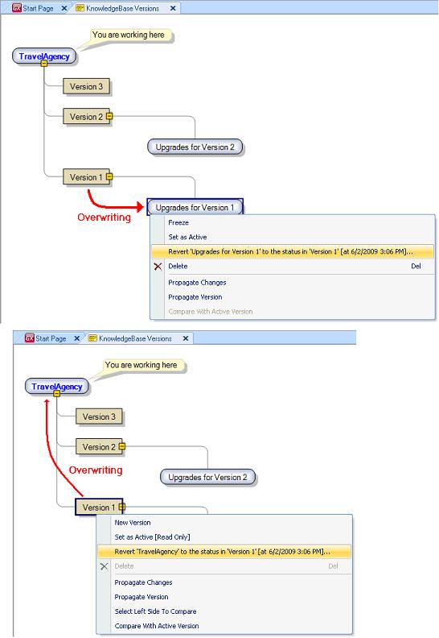

The Revert operation is used to restore a Development Version to a previously known state (a Frozen Version). It overwrites the target with the source content. All information in the target is lost and replaced with information in the source.
The Revert operation can be performed from a Development Version as well as from a Frozen Version.
The command always includes two versions: a frozen version and a development version, and what it does is to make the state of the development version equal to the state of the frozen version.
If the Revert operation is activated from a frozen version, the development version reverted is that which is superordinated to the frozen version. When it is performed from a development version, the frozen version used is that which is superordinated to the development version. Note that, as a consequence, the Revert command cannot be invoked from the main development version because it doesn't have a superordinated version.

|